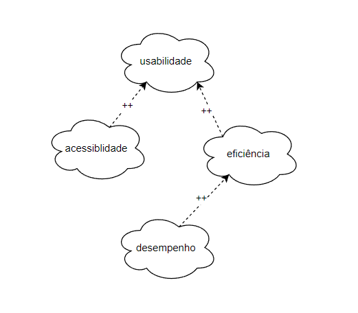
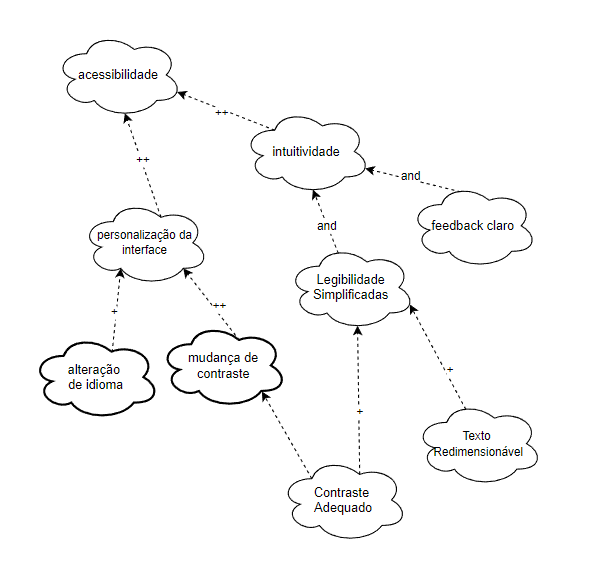
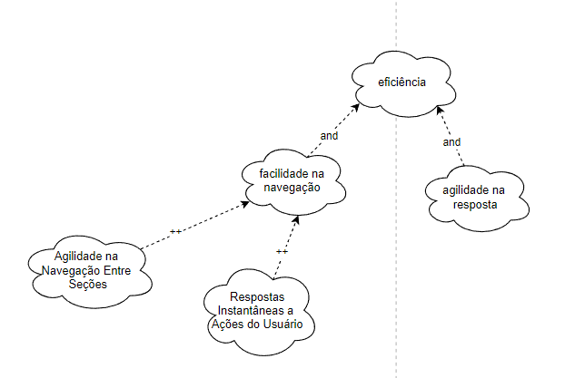
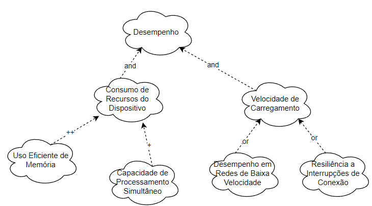

NFR Framework
Introdução
O NFR Framework (Non-Functional Requirements Framework) é uma abordagem desenvolvida por Lawrence Chung e colaboradores para tratar requisitos não funcionais de forma sistemática e qualitativa. Diferentemente dos requisitos funcionais, que têm critérios claros de satisfação, os requisitos não funcionais (NFRs) são subjetivos e frequentemente envolvem decisões de compromisso (trade-offs). O framework auxilia no processo de identificação, modelagem e análise desses requisitos, permitindo que desenvolvedores considerem aspectos como segurança, desempenho, usabilidade e manutenibilidade durante o design de sistemas.
No NFR Framework, os requisitos não funcionais são representados como softgoals, que refletem objetivos flexíveis e interdependentes. Por meio de gráficos de softgoals, é possível visualizar as relações entre diferentes NFRs e como soluções propostas contribuem de forma positiva ou negativa para sua satisfação. Além disso, o framework inclui técnicas para operacionalizar os softgoals em soluções concretas e ferramentas para explorar compromissos entre requisitos conflitantes, como equilibrar desempenho e segurança. Dessa forma, o NFR Framework oferece um suporte valioso para tomada de decisões no desenvolvimento de sistemas complexos.
Softgoal Interdependency Graph
O Softgoal Interdependency Graph (SIG) é uma ferramenta de visualização central ao funcionamento do NFR Framework. Ele apresenta de forma gráfica e estruturada os softgoals identificados pela equipe de desenvolvimento, suas inter-relações e contribuições. Esse modelo facilita a análise de interdependências entre metas não funcionais, permitindo que os desenvolvedores tomem decisões fundamentadas sobre como abordar requisitos qualitativos do sistema.
Tipos de Softgoal
Para compreender o SIG, é essencial entender os tipos de softgoal. Um NFR Softgoal é definido como uma meta qualitativa cuja satisfação não é precisa ou completamente mensurável. Eles podem ser refinados em diferentes formas:
- Softgoals Operacionalizados: Representam transformações de metas abstratas em elementos concretos e funcionais no sistema.
- Softgoals de Afirmação: Servem como registros argumentativos em linguagem natural, adicionando justificativas ou evidências ao modelo. Interdependências
- As interdependências entre softgoals no SIG são organizadas em dois principais conceitos: decomposições e contribuições.
Decomposições
As decomposições desmembram softgoals em subníveis para detalhamento e refinamento, abrangendo diferentes dimensões:
- Decomposição de NFR: Divide metas principais em componentes menores e mais gerenciáveis.
- Decomposição de Operacionalização: Foca na concretização de metas abstratas em soluções específicas.
- Decomposição de Afirmação: Valida ou rejeita justificativas específicas para softgoals.
- Decomposição de Priorização: Permite refinar metas com associação de prioridades, mantendo o mesmo escopo.
Contribuições
As contribuições descrevem como um softgoal derivado impacta o softgoal principal:
- AND: Todos os derivados precisam ser satisfeitos para que o objetivo principal seja alcançado.
- OR: Qualquer derivado satisfeito já contribui para alcançar o objetivo principal.
- MAKE (++): Contribuição totalmente positiva.
- BREAK (--): Contribuição totalmente negativa.
- HELP (+): Impacto positivo moderado.
- HURT (-): Impacto negativo moderado.
- UNKNOWN (?): Relação indefinida.
- EQUALS: Satisfação direta e proporcional entre derivados e principais.
- SOME: A forma de contribuição é conhecida, mas sua intensidade permanece incerta.
Propagação de Impactos
No NFR Framework, a propagação de impactos analisa como alterações em um softgoal afetam os demais. Isso envolve identificar relações de dependência, avaliar trade-offs e gerenciar efeitos colaterais. As notações típicas incluem:
- ✓ (satisfeito): Impacto positivo significativo.
- 𝒲+ (fracamente satisfeito): Impacto positivo, porém limitado.
- X (negado): Impacto negativo significativo.
- 𝒲- (fracamente negado): Impacto negativo menor.
- 🗲 (conflitante): Relação de conflito com características mistas.
- u (indeterminado): Impacto incerto devido à falta de dados.
Metodologia
A construção de um SIG segue etapas sistemáticas, incluindo a definição de temas, revisão de literatura e validação. Primeiramente, os tópicos gerais são refinados para relacionar os requisitos não funcionais. Posteriormente, realiza-se a validação por meio de revisões críticas. Ferramentas como o Draw.io são utilizadas para a elaboração dos gráficos.
Cartões de Especificação
Os cartões de especificação apresentados nas Tabelas 1 a 5 foram empregados para descrever os Requisitos Não-Funcionais destinados à elaboração dos NFR Frameworks.
Tabela 1 - Cartão de Especificação 1
| RNF01 | Classificação: Desempenho |
|---|---|
| Descrição: O sistema deve ter tempo de resposta inferior a 2 segundos para consultas básicas. | |
| Justificativa: Garantir agilidade e uma boa experiência do usuário ao utilizar funcionalidades básicas. | |
| Origem do Requisito: Pesquisa de mercado e feedback de usuários. | |
| Critério de Aceitação: Todas as consultas básicas retornam resultados em até 2 segundos em condições normais de operação. | |
| Dependências: Nenhuma. | |
| Prioridade: Alta | |
| Conflitos: Possível aumento do uso de recursos computacionais. | |
| História: Adicionado após testes iniciais indicarem lentidão em consultas básicas. |
Autor: Victor Rodrigues
Tabela 2 - Cartão de Especificação 2
| RNF04 | Classificação: Acessibilidade |
|---|---|
| Descrição: A interface do aplicativo deve seguir as diretrizes de acessibilidade da norma técnica NBR 17060:2022. | |
| Justificativa: Garantir que o aplicativo seja acessível a todas as pessoas, incluindo aquelas com deficiências. | |
| Origem do Requisito: Regulamentações técnicas e normativas. | |
| Critério de Aceitação: Certificação de conformidade com a norma NBR 17060:2022 após auditoria. | |
| Dependências: Nenhuma | |
| Prioridade: Alta | |
| Conflitos: Necessidade de ajustes adicionais na interface. | |
| História: Adicionado após revisão normativa. |
Autor: Víctor Schmidt
Tabela 3 - Cartão de Especificação 3
| RNF06 | Classificação: Acessibilidade |
|---|---|
| Descrição: O aplicativo deverá disponibilizar suporte para múltiplos idiomas (português como padrão). | |
| Justificativa: Permitir que o aplicativo seja utilizado por pessoas diferentes regiões. | |
| Origem do Requisito: Pesquisa de mercado global. | |
| Critério de Aceitação: Interface completamente traduzida para os idiomas suportados, com português como padrão. | |
| Dependências: Nenhuma | |
| Prioridade: Média | |
| Conflitos: Aumento de custo e tempo de desenvolvimento. | |
| História: Adicionado após feedback de clientes internacionais. |
Autor: Júlia Takaki
Tabela 4 - Cartão de Especificação 4
| RNF08 | Classificação: Eficiência |
|---|---|
| Descrição: O perfil de recomendação de investimentos deve ser acessível a partir de 3 cliques de qualquer parte do aplicativo. | |
| Justificativa: Melhorar a navegação e o acesso rápido a funcionalidades importantes. | |
| Origem do Requisito: Pesquisa de usabilidade. | |
| Critério de Aceitação: Testes de usabilidade comprovarem que o objetivo é alcançado em no máximo 3 cliques. | |
| Dependências: Nenhuma | |
| Prioridade: Média | |
| Conflitos: Nenhum identificado. | |
| História: Introduzido após feedback de usuários sobre dificuldade de navegação. |
Autor: Thales Euflauzino
Tabela 5 - Cartão de Especificação 5
| RNF09 | Classificação: Acessibilidade |
|---|---|
| Descrição: O aplicativo deve incluir uma opção de tema escuro para melhorar a experiência do usuário. | |
| Justificativa: Reduzir o cansaço visual e atender preferências dos usuários. | |
| Origem do Requisito: Pesquisa de satisfação do usuário. | |
| Critério de Aceitação: Tema escuro implementado e acessível a partir das configurações do aplicativo. | |
| Dependências: Nenhuma | |
| Prioridade: Baixa | |
| Conflitos: Nenhum identificado. | |
| História: Adicionado com base em tendências de mercado. |
Autor: Maria Helena
NFR 00 - Geral
Devido à limitação para atuar exclusivamente com Requisitos Não-Funcionais ainda não implementados, o SIG apresentado foi ajustado para incorporar apenas os Requisitos a serem trabalhados, conforme ilustrado na Figura 1.
Figura 1 - SIG adaptado

Fonte: Silva, 2019
NFR 01 - Acessibilidade
Requisitos Não-Funcionais - Acessibilidade
Os requisitos utilizados para a construção do SIG apresentado na Figura 2 podem ser encontrados em Requisitos Elicitados.
- RNF04: Infere que a interface do sistema deve ser desenhada com base em diretrizes técnicas que garantam uma experiência intuitiva e eficiente para o usuário, conforme a norma NBR 17060:2022.
- RNF09: Infere que o sistema deve oferecer um tema escuro para proporcionar uma experiência personalizada e confortável, especialmente em ambientes com baixa iluminação.
Figura 2 - SIG acessibilidade

Autores: Júlia Takaki e Víctor Schmidt, 2024
Propagação dos Impactos - Acessibilidade A avaliação da propagação de impactos está apresentada na Tabela 3.
Tabela 3 - SIG acessibilidade
| NFR | Impacto |
|---|---|
| acessibilidade | 𝒲- |
| personalização da interface | 𝒲+ |
| alteração de idioma | X |
| mudança de contraste | 𝒲+ |
| contraste adequado | 𝒲+ |
| intuitividade | ✓ |
| legibilidade simplificada | 𝒲+ |
| texto redimensionável | 𝒲- |
| feedback claro | 𝒲+ |
Autores: Júlia Takaki e Víctor Schmidt, 2024
NFR 02 - Eficiência
Requisitos Não-Funcionais - Eficiência
Os requisitos utilizados para a construção do SIG apresentado na Figura 3 podem ser encontrados em Requisitos Elicitados.
- RNF01: Infere que o sistema deve responder a consultas básicas em menos de 2 segundos, garantindo rapidez no processamento e na interação do usuário.
- RNF08: Infere que a navegação no aplicativo deve ser simplificada, permitindo acesso rápido ao perfil de recomendação de investimentos com um número reduzido de cliques.
Figura 3 - SIG Eficiência

Autor: Thales Euflauzino, 2024
Propagação dos Impactos - Eficiência
A avaliação da propagação de impactos está apresentada na Tabela 4.
Tabela 4 - SIG adaptado
| NFR | Impacto |
|---|---|
| Eficiência | 𝒲- |
| facilidade na navegação | 𝒲+ |
| Agilidade na navegação entre seções | ✓ |
| Respostas Instantâneas a Ações do Usuários | 𝒲+ |
| Agilidade nas respostas | 𝒲+ |
| Velocidade de carregamento | 𝒲+ |
| Consumo de recursos do Dispositivo | X |
Autor: Thales Euflauzino, 2024
NFR 03 - Desempenho
Requisitos Não-Funcionais - Desempenho
Os requisitos utilizados para a construção do SIG apresentado na Figura 4 podem ser encontrados em Requisitos Elicitados.
- RNF01: Infere que o sistema deve ser tecnicamente otimizado para processar consultas básicas rapidamente, mesmo sob carga normal de uso.
Figura 4 - SIG Desempenho

Autores: Maria Helena e Victor Rodrigues, 2024
Propagação dos Impactos - Desempenho
A avaliação da propagação de impactos está apresentada na Tabela 5.
Tabela 5 - SIG adaptado
| NFR | Impacto |
|---|---|
| Desempenho | 𝒲+ |
| Consumo de recursos do Dispositivo | 𝒲- |
| uso eficiente da memória | 𝒲+ |
| capacidade de processamento simultâneo | ✓ |
| velocidade no carregamento | ✓ |
| Desempenho em redes de baixa velocidade | 𝒲+ |
| resiliência a interrupções de conexão | 𝒲+ |
Autores: Maria Helena e Victor Rodrigues, 2024
Priorização e Validação
No vídeo 1 apresenta-se a gravação da validação do Product Backlog.
Vídeo 1 - Validação e Priorização
Autor: Victor Rodrigues, 2024
Bibliografia
PAIM, F. R. S., CASTRO, J. F. B. Enhancing Data Warehouse Design with the NFR Framework. Centro de Informática UFPE, Recife, 2019. Disponível em: http://wer.inf.puc-rio.br/WERpapers/artigos/artigos_WER02/paim.pdf. Acesso em: 13/12/2024.
SILVA, Reinaldo Antônio. NFR4ES: Um Catálogo de Requisitos Não-Funcionais para Sistemas Embarcados. Centro de Informática UFPE, Recife, 2019. Disponível em: https://repositorio.ufpe.br/handle/123456789/34150. Acesso em: 13/12/2024.
CHUNG, L., NIXON, B. A., YU, E., MYLOPOULOS, J. Non-functional requirementsin software engineering. Springer Science & Business Media: [S.l.], 2000. v. 5.
Histórico de Versões
| Versão | Data | Descrição | Autor | Revisor |
|---|---|---|---|---|
1.0 |
11/12/2024 | Criação do documento | Júlia Takaki | Victor Rodrigues |
1.1 |
11/12/2024 | SGI e Cartões de especificação | Victor Rodrigues | Thales Euflauzino |
1.2 |
16/12/2024 | Estrutura nfr | Victor Rodrigues | Victor Schmidt |
1.3 |
16/12/2024 | SGI adicionados | Grupo | Victor Schmidt |
1.4 |
17/12/2024 | Ajustando fonte e autor | Thales Euflauzino | Victor Schmidt |
1.5 |
17/12/2024 | Alteração requisitada pelo professor | Victor Rodrigues | Victor Schmidt |